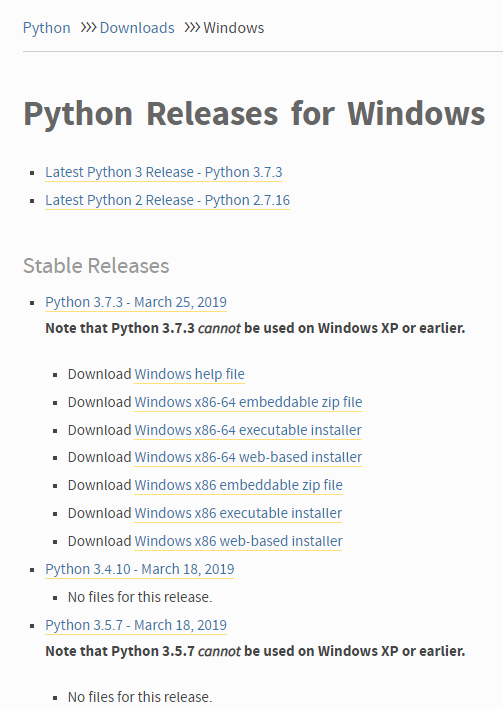
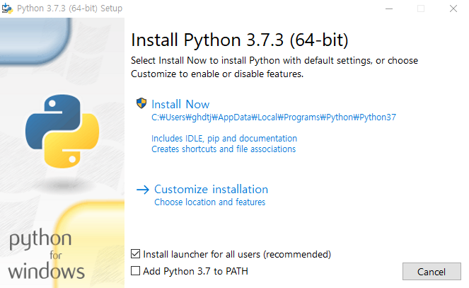
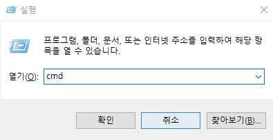
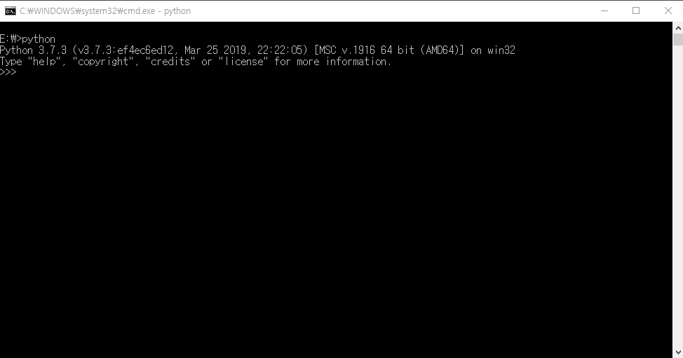
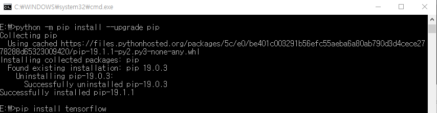
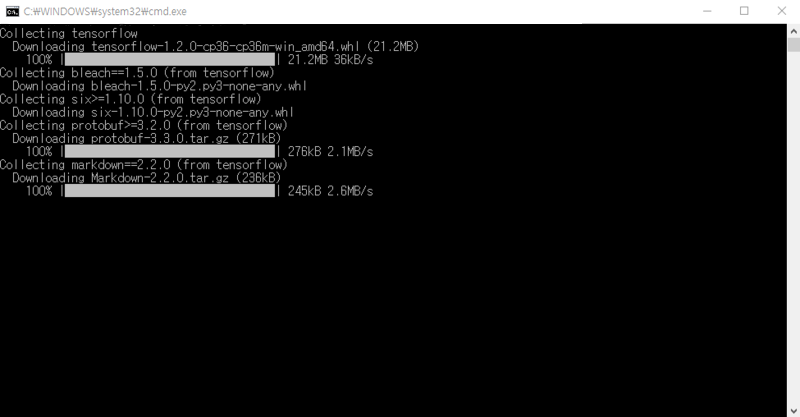
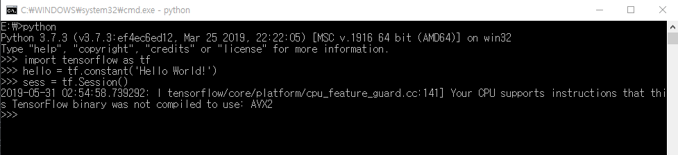
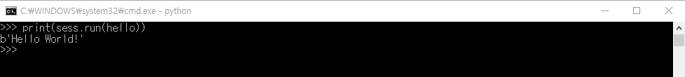

텐서플로우 & 파이썬 환경 구축하기
파이썬과 텐서플로우를 사용할 수 있는 환경을 구축해보자
본 글은 학교 동아리용으로 작성된 관계로 Anaconda를 이용하지 않습니다
개발 환경 소개
이번에 구축할 개발 환경은 텐서플로우(Tensorflow)와 파이썬(Python)을 이용합니다.
파이썬은 1991년 프로그래머인 귀도 반 로섬이 발표한 고급 프로그래밍 언어로, 플랫폼 독립적이며 인터프리터식, 객체지향적, 동적 타이핑 대화형 언어입니다.
파이썬은 방대한 라이브러리를 지원하여 높은 생산성과 빠른 개발 속도를 가진것이 특징입니다.

텐서플로우 는 구글에서 지원하는 파이썬 환경에서 딥러닝과 같은 인공지능 기법들을 쉽게 구현하도록 도와주는 오픈소스 라이브러리입니다.
텐서플로우는 계산 구조와 목표 함수만 정의하면 자동으로 미분 계산을 처리해줘 매우 편리합니다.
파이썬 설치
그럼 바로 Python부터 설치해봅시다.
먼저 https://www.python.org/downloads/windows/ 에 들어갑니다.
여러 가지 버전 중 자신의 컴퓨터에 해당하는 버전을 설치해봅시다.

저는 여기에서 윈도우 Windows x86 executable installer버전을 설치하겠습니다.

이때 여기에서
- Add Python {version} to Path
를 꼭 체크해주세요!!
이를 체크해야 환경 변수에 파이썬 경로가 추가되어서 어떤 곳에서 나 python을 사용할 수 있습니다.
설치가 되었다면 Window + R을 눌러 명령 프롬프트(CMD)창을 실행시켜줍니다.

그 다음 python을 입력하여 잘 작동하는지 확인하고 창을 닫아줍니다.

여기서 Python을 찾을 수 없다는 메시지가 뜨면 아까 설치 과정에서
- Add Python {version} to Path
를 체크하지 않아서 환경 변수에 추가가 안된 경우입니다.
그럴 경우 다시 설치 파일을 실행시켜 파이썬을 제거 후 위의 파이썬 설치 과정을 다시 진행하면 됩니다.
텐서플로우(Tensorflow) 설치
다시 Window + R을 눌러 명령 프롬프트(CMD)창을 실행시켜줍니다.
먼저 pip3 install --upgrade pip로 pip를 업그레이드 해준 후

pip3 install tensorflow를 입력하여 텐서플로우를 설치해줍니다.

여기서 pip는 파이썬으로 작성된 패키지 소프트웨어를 설치 & 관리하는 패키지 관리 시스템을 말합니다.
이제 python을 입력하여 파이썬 커멘드(Command) 라인으로 들어가줍니다.
한번 잘 작동하는지 아래의 코드를 입력하여 테스트를 해봅시다.
1 | import tensorflow as tf |

이 스크린샷처럼
I tensorflow/core/platform/cpu_feature_guard.cc:141] Your CPU supports instructions that this TensorFlow binary was not compiled to use: AVX2
와 같은 오류가 뜰 수 있는데, 이는 직역하면
당신의 CPU는 이 텐서플로우 바이너리가 사용하지 않은 명령어(instructions)들을 지원한다.
라는 뜻으로 실행 속도를 더 개선시킬 수 있으므로 컴파일 옵션을 최적화하라는 경고 메시지이므로 무시하고 넘어갑니다.
경고 상세 설명
최신 CPU들은 AVX, SSE4 같은 명령어들을 제공합니다.
이 명령어들은 CPU가 선형대수(Linear Algebra) 연산을 좀 더 빠르게 수행할 수 있도록 도와주는 역할을 합니다.
머신러닝에서 학습 동작은 이런 선형대수 연산을 사용하기 때문에 선형대수 연산의 속도 개선은 학습 속도 개선으로 이어지게 되는 것입니다.
이런 CPU Instruction을 이용할 경우 학습 속도가 300%까지 빨라질 수 있다고 합니다.
(해결법 및 설명 원문 : https://stackoverflow.com/questions/47068709/your-cpu-supports-instructions-that-this-tensorflow-binary-was-not-compiled-to-u)
그다음 이어서 print(sess.run(hello))를 입력하여 아까 얻어온 세션의 값을 콘솔 창에 출력해 봅시다.

위 사진과 같이 b'Hello World!'가 출력되는 것을 볼 수 있습니다.
여기서 b는 자료 구조와 관련된 키워드이므로 지금은 넘어가도록 하겠습니다.
이렇게 파이썬과 텐서플로우 설치를 마치도록 하겠습니다!!